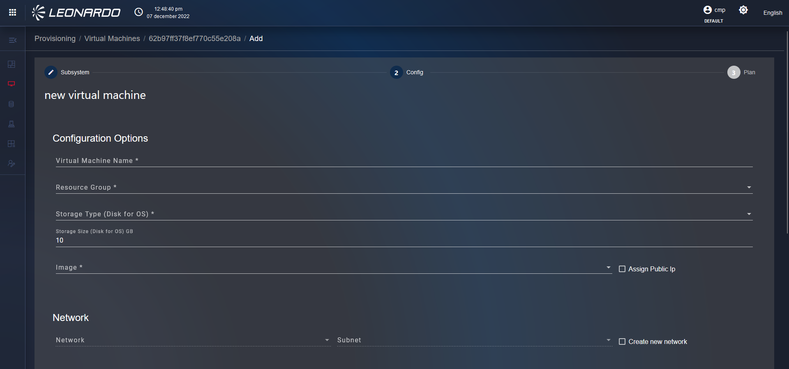
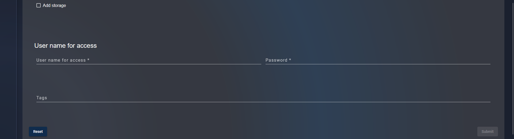
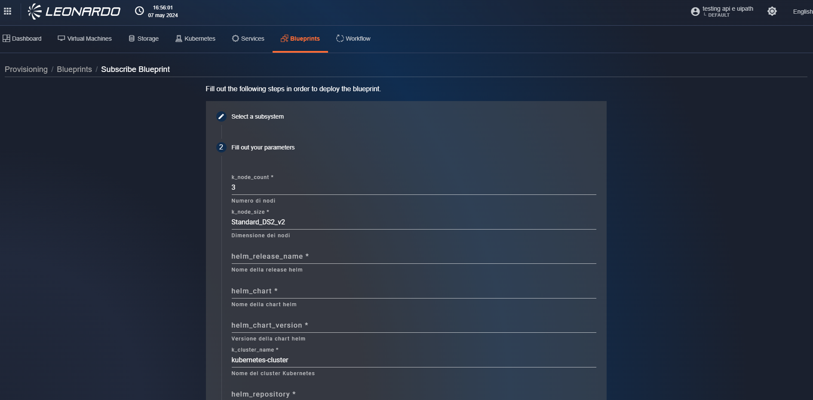
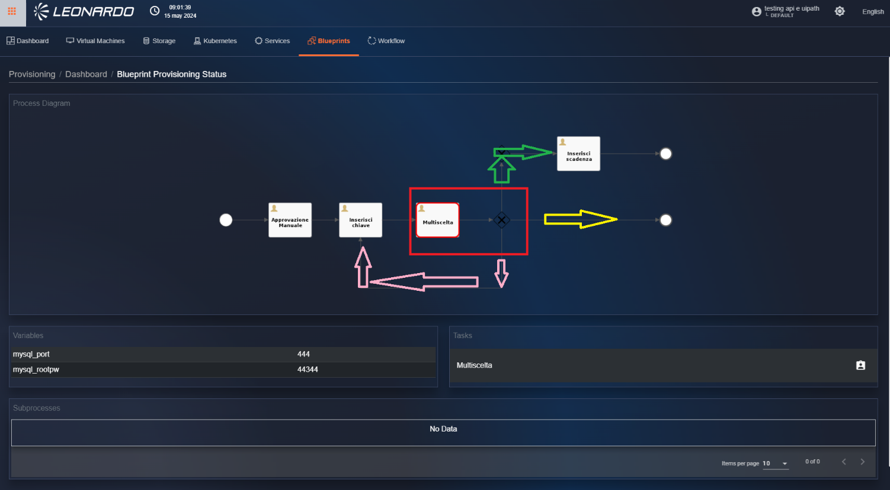

Provisioning
Il provisioning è una delle funzionalità più importanti della SCMP,Attraverso questi moduli, è possibile allocare degli asset runtime all'interno dei provider gestiti dalla SCMP.
Per poter utilizzare questa funzionalità è necessario che all' interno della SCMP siano definite delle relazioni (5.9.1.1.3)
Questo vincolo è stato reso disponibile per blindare l'associazione di certe caratteristiche al provisioning, ad esempio, la size della VM non è selezionabile durante il provisioning ma rientra in quelle caratteristiche predefinite dagli amministratori, all' interno del catalogo.

Figura 283 - Accesso a "Provisioning"
Dashboard
Accedendo alla funzionalità la prima pagina disponibile è la Dashboard dei provisioning effettuati all'interno del sistema.
La pagina si presenta con una serie di grafici, filtri e l'elenco dei provisioning effettuati.
I grafici permettono di visualizzare le informazioni presenti in tabella raggruppate per:
-
Il totale di tutti i provisioning effettuati suddivisi per tipologia;
-
Lo stato dei provisioning effettuati suddivisi per esito e categoria dell' asset provisionato

Figura 284 – Grafici della pagina di provisioning
In basso nella pagina possiamo utilizzare la sezione filtri per modificare i risultati presenti nella tabella, il filtro "Provisioning Type" (Figura 285)è il filtro principale che permette di selezionare la tipologia di asset da visualizzare, nello specifico:
-
Selezionando "Resources" viene aggiunto un filtro che permette di selezionare il tipo di risorsa di cui si vuole visualizzare lo stato dei provisioning di default, il sistema mostra la lista di VM provvisionate.
-
Selezionando "Services" e "Custom services" non ci sono filtri aggiuntivi e la lista viene aggiornata con i soli provisioning relativi ai Servizi
-
Selezionando "Blueprint" viene aggiunto un filtro che permette di cambiare il flusso (cioè la tipologia di blueprint da visualizzare) e la tabella viene modificata per visualizzare solo i flussi non ancora completati, sopra la tabella è presente un controllo che permette di cambiare tab, per passare dai flussi "in corso" ai flussi "Completati" (Figura 289).

Figura 285 – Filtro per tipologia di asset
Specifiche della tabella dei provisioning
"Resources", "Services", "Custom Services"
L'elenco ha i seguenti attributi, quando viene selezionato come filtro "Resources", "Services", "Custom Services" (Figura 286)
-
Uuid, Identificativo del provisioning;
-
Data di completamento del provisioning;
-
Data di richiesta del provisioning;
-
Utente che ha creato l'istanza;
-
Status;
-
Output dei sistemi di provisioning;
-
Json di dettaglio del provisioning effettuato;
-
Informazioni sullo stato;
-
Tipo di risorsa.

Figura 286 - Tabella “Resources”
Quando siamo in questa visualizzazione è possibile effettuare le seguenti operazioni:
-
Cliccando sulla riga di un provisioning fallito è possibile modificarlo e rieseguirlo
-
Cliccando sull' icona "Output Message) in corrispondenza di un provisioning è possibile visualizzare la risposta ricevuta dal modulo di "Terraform" (Figura 287).
-
Cliccando il tasto "Download" è possibile scaricare i file restituiti dalla funzionalità.
-
Cliccando il tasto "State" è possibile visualizzare il grafico e la lista delle risorse provvisionate (Figura 288).

Figura 287 - Visualizzazione messaggio Terraform

Figura 288 - Visualizzazione grafico risorse
Blueprint
L'elenco ha i seguenti attributi, quando viene selezionato come filtro "Blueprint" (Figura 289)
-
Nome della blueprint
-
Data di creazione
-
Utente che ha effettuato il provisioning della blueprint
Sopra la tabella possiamo notare due tab, cliccando su di essi la tabella viene filtrata rispettivamente per Blueprint da completare e Blueprint completate (in rosso nell' immagine)

Figura 289 – Tab della tabella “Provisioning blueprint”
In questa visualizzazione è possibile cliccare su una riga della tabella per visualizzare i dettagli della blueprint.
Quando la blueprint selezionata è "da completare" verremo riportati nella pagina di provisioning blueprint (Figura 290) dove potremo effettuare le operazioni necessarie al completamento, per i dettagli consultare la sezione(5.13.3.3.2).

Figura 290 – Visualizzazione flow “Da completare”
Se viene selezionata invece una blueprint completata verremo riportati nella pagina di dettaglio del provisioing della blueprint dove non verra visualizzato il "flow" di previsione perché gia completato.(Figura 291)

Figura 291 – Visualizzazione flow “Completato”
Creazione dei provisioning
Provisioning di "Risorse fisiche"
Utilizzando i tab presenti nella funzionalità di provisioning(Figura 292). è possibile visualizzare le liste di risorse provvisionabili all' interno della SCMP, come ad esempio Virtual Machines, Storage e Kuberneetes.
Per poter visualizzare degli elementi all' interno delle liste di risultati (Figura 292). è necessario che nel catalogo SCMP sia presente una relazione con la risorsa di catalogo del provider da provvisionare(5.9.1.1.3)
Le funzionalità disponibili per questi elementi sono identiche, cambiano solo i parametri da inserire negli step di creazione.

Figura - Tab per la creazione di risorse
Virtual Machines
Per iniziare il provisioning di una risorsa cliccare sulla riga corrispondente per visualizzare la pagina contenente lo step 1 della creazione di un provisioning (Figura 293), in questo step è necessario selezionare, tramite il dropdown presente sulla sinistra, il sottosistema "target" nel quale si vogliono provvisionare le risorse, una volta selezionato verrà visualizzato sulla destra uno specchietto informativo che indica le caratteristiche della risorsa che verrà provisionata, per continuare In basso a destra, cliccare sul pulsante "Next" per passare alla pagina dello step 2 "Config" (Figura 294).

Figura 293 – Selezione del sottosistema “target”, provisioning step 1
Nella pagina "Config" dello step 2 (Figura 294), compilare tutti i campi obbligatori di tutte le sezioni del form. In basso a sinistra, cliccare sul pulsante "Reset" per resettare tutti i campi della pagina.
Invece a destra, cliccare sul pulsante "Submit" per passare allo step 3 "Plan".
{width="6.299305555555556in" height="3.1493055555555554in"}{width="6.299305555555556in" height="1.96875in"}
[]{#_Ref173157090 .anchor}Figura 294 - Compilazione dei campi del form di previsione di una risorsa
Dopo aver cliccato sul pulsante "Submit", l'utente viene reindirizzato nella pagina "Plan" dello step 3 dove possiamo visualizzare il piano di provisioning inviato da terraform , che indica tutti i parametri delle risorse che verranno configurate e in basso è presente una lista con una prospettiva dei costi da sostenere(Figura 295).

Figura 295 - Schermata della previsione
Sempre dalla pagina "Plan" dello step 3, in basso a destra, sono presenti tre pulsanti: "Back", "Reset" e "Apply". Se si clicca sul pulsante "Back", l'utente torna nella pagina "Config" dello step 2 in cui è possibile modificare i parametri.
Se si clicca sul pulsante "Reset", l'utente viene reindirizzato nella pagina "Subscription" dello step 1 in cui è necessario selezionare un sottosistema, e successivamente inserire i parametri all'interno della pagina "Config" dello step 2.
Infine, se si clicca sul pulsante "Apply", la previsione viene salvata e l'utente viene reindirizzato nella pagina del tab "Dashboard" in cui l'utente verifica la presenza della previsione appena creata (Figura 296).

Figura 296 - Lista delle previsioni
Provisioning di "Servizi"
Per accedere alla pagina dei servizi cliccare sul tab che raffigura uno scaffale posizionato nel menu in alto. Fatto questo, ci si ritrova all'interno della pagina "Service" (Figura 297).

Figura 297 - Lista delle card
All' interno della pagina viene visualizzata una lista di componenti denominati "Card". Ogni card fa riferimento ad un tipo di servizio specifico, in particolare vengono visualizzate le seguenti informazioni:
-
Nome del servizio;
-
Icona del servizio;
-
Tipologia di script utilizzato per il provisioning del servizio;
-
Descrizione del servizio;
-
Tasto "Subscribe" per procedere con la creazione del servizio.
A seconda della tipologia di servizio selezionato cambiano i passaggi per effettuarne i provisioning, di seguito verranno analizzati in dettaglio.
Servizi "standard"
Cliccare il tasto "Subscribe" in corrispondenza di un servizio "standard", l'utente verrà reindirizzato alla pagina dello step 1 della creazione del servizio e verranno visualizzate tutte le versioni del servizio instanziabili dalla SCMP (Figura 298) in particolare verranno visualizzati vari blocchi ognuno con una lista di configurazioni:
-
Nome e versione del servizio che verrà instanziato;
-
Nome e versione del sistema operativo che verrà installato sulla macchina;
-
Provider di appartenenza sul quale verrà provvisionato il servizio.

Figura 298 - Provisioning di un servizio “standard”
Selezionare una versione del software e premere il tasto "Continue", l'utente viene reindirizzato allo step 2 del provisioning di un servizio.(Figura 299)
Allo step 2 sarà necessario selezionare un sottosistema e compilare il form con i dettagli del sottosistema scelto.

Figura 299 - Configurazione di un servizio “standard”
A valle del completamento di tutti i campi del form cliccare su "submit".
Verrà inviata una richiesta al servizio Terrafom che validerà la configurazione di attivazione del flusso indicato e restituirà il risultato. (Figura 300)

Figura 300 - Sommario della configurazione del servizio
Cliccare su "Apply" per validare il flusso e attivare la sottoscrizione del servizio.
Verrà aperta la pagina della dashboard con la lista di tutti i servizi sottoscritti ed il loro relativi stati.(Figura 300)\ Nello specifico il nuovo servizio provvisionato avrà come stato "In esecuzione" di colore giallo, successivamente a seconda del risultato anche lo stato verrà aggiornato in "Completato" di colore verde o "Errore" di colore rosso

Figura 301 - Dashboard con la lista di tutti i servizi sottoscritti ed il loro relativi stati
Servizi "Custom"
Cliccare il tasto "Subscribe" in corrispondenza di un servizio "custom", l'utente verrà reindirizzato alla pagina dello step 1 della creazione del servizio dove si può selezionare il sottosistema, nel quale effettuare il provisioining, dalla dropdown al centro della pagina (Figura 302)

Figura 302 - Provisioning di un servizio “Custom”
Selezionando il sosttossitema la pagina si aggiorna per passare allo step 2 del provisioning di un servizio.
In questo step 2 sarà necessario compilare il form con i parametri di configurazione specifici del servizio selezionato (Figura 303)
Figura 303 - Configurazione di un servizio “custom”
A valle del completamento di tutti i campi del form cliccare su "launch".
Verrà inviata una richiesta al servizio Terrafom che validerà la configurazione di attivazione del flusso indicato e restituirà il risultato. (Figura 304)
Figura 304 - Sommario della configurazione del servizio
Cliccare su "Apply" per validare il flusso e per far iniziare le operazioni automatiche di configurazione
Verrà aperta la pagina della dashboard (Figura 305) con la lista di tutti i servizi sottoscritti ed il loro relativi stati.\ Nello specifico il nuovo servizio provvisionato avrà come stato "In esecuzione" di colore giallo, successvamente a seconda del risultato anche lo stato verrà aggiornato in "Completato" di colore verde o "Errore" di colore rosso
Figura 305 - Dashboard con la lista di tutti i servizi sottoscritti ed il loro relativi stati
Servizi "Azure Pipeline"
Cliccare il tasto "Subscribe" in corrispondenza di un servizio "Azure pipeline", l'utente verrà reindirizzato alla pagina dello step 1 della creazione del servizio, dalla dropdown al centro della pagina selezionare il "Branch" della pipeline da eseguire (Figura 306)

Figura 306 - Provisioning di un servizio “Azure pipeline”
Selezionando il branch la pagina si aggiorna per passare allo step 2 della creazione di un servizio.
In questo step 2 sarà necessario compilare il form con i parametri di configurazione recuperati direttamente dalla Pipeline che verrà eseguita (Figura 307)

Figura 307 - Configurazione di un servizio “Azure pipeline”
A valle del completamento di tutti i campi del form cliccare su "launch" per lanciare la richiesta di avvio della pipeline, Verrà aperta la pagina della dashboard con la lista di tutti i servizi sottoscritti ed il loro relativi stati. (Figura 308)\ Nello specifico il nuovo servizio provvisionato avrà come stato "In esecuzione" di colore giallo, successvamente a seconda del risultato anche lo stato verrà aggiornato in "Completato" di colore verde o "Errore" di colore rosso
Figura 308 - Dashboard con la lista di tutti i servizi sottoscritti ed il loro relativi stati
Servizi "PaaS" e "AI Services"
Cliccare il tasto "Subscribe" in corrispondenza di un servizio "PaaS", l'utente verrà reindirizzato alla pagina dello step 1 della creazione del servizio dove sarà necessario compilare il form con i parametri di configurazione specifici del servizio selezionato (Figura 309)

Figura 309 - Configurazione di un servizio “PaaS”
A valle del completamento di tutti i campi del form cliccare su "launch".
Verrà aperta la pagina della dashboard con la lista di tutti i servizi sottoscritti ed il loro relativi stati.(Figura 310)\ Nello specifico il nuovo servizio provvisionato avrà come stato "In esecuzione" di colore giallo, successivamente a seconda del risultato anche lo stato verrà aggiornato in "Completato" di colore verde o "Errore" di colore rosso
Figura 310 - Dashboard con la lista di tutti i servizi sottoscritti ed il loro relativi stati
Creazione di una richiesta di provisioning "Blueprint"
Per accedere alla pagina dei servizi cliccare sul tab che raffigura delle finestre, nel menu in alto. Fatto questo, ci si ritrova all'interno della pagina "Blueprints" (Figura 311).
All' interno della pagina viene visualizzata una lista di componenti denominati "Card". Ogni card fa riferimento ad un tipo di servizio specifico, in particolare vengono visualizzate le seguenti informazioni:
-
Nome del servizio;
-
Icona del servizio;
-
Tipologia di script utilizzato per il provisioning del servizio;
-
Descrizione del servizio;
-
Tasto "Subscribe" per procedere con la creazione del servizio.
A seconda della blueprint selezionata cambiano i parametri per effettuarne i provisioning, mentre le funzionalità rimangono invariate.
Figura 311 - Lista delle blueprint
Richiesta di esecuzione della "Blueprint"
Cliccare il tasto "Subscribe" in corrispondenza di una "Blueprint", l'utente verrà reindirizzato alla pagina dello step 1 della creazione, in questo step è necessario selezionare dal dropdown il sottosistema nel quale si vuole effettuare il provisioning(Figura 312)

Figura - Step 1 della creazione di una Blueprint
Selezionando un sottosistema la pagina passerà nello step 2 della creazione dove sarà necessario compilare il form con i parametri di configurazione specifici della blueprint selezionata (Figura 313)
{width="6.8909722222222225in" height="3.4034722222222222in"}
[]{#_Ref173157168 .anchor}Figura - Step 2 della creazione \"Blueprint\"
Completato l'inserimento dei parametri è possibile cliccare il pulsante "Start" in basso a destra per avviare il provisioning (Figura 314), dopo alcuni secondi verremo reindirizzati nella pagina "Dashboard" filtrata per "Blueprint da completare"

Figura - Richiesta "Blueprint" inviata correttamente
Pagina di gestione della blueprint "da completare"
Per poter lavorare la blueprint è necessario , dalla dashboard , selezionare una blueprint "da completare" , cliccando sulla riga corrispondente verrà visualizzata la sua pagina di gestione (Figura 315)
Questa pagina è divisa in sezioni, nello specifico:
-
"Process Diagram": in questa sezione viene visualizzata una immagine che rappresenta graficamente tutti i passaggi da eseguire nella blueprint, inoltre viene indicato in rosso lo step in esecuzione.
-
"Variables": in questa sezione possiamo visualizzare tutti i parametri inseriti manualmente o automaticamente durante l'esecuzione della blueprint.
-
"Task": in questa sezione è possibile tramite i controlli disponibili, gestire gli step della blueprint che richiedono un intervento manuale.
-
"Subprocess": in questa sezione potremo visualizzare lo stato di tutte le operazioni automatiche effettuata durante l'esecuzione della blueprint (Figura 316)

Figura - Flow del piano di provisioning
L' esecuzione , e quindi il relativo cambio, tra gli step della Blueprint può essere effettuato in due modi, automaticamente o manualmente, esattamente come descritto all' interno della Blueprint stessa.
Step automatici
Il sistema gestisce automaticamente la creazione, configurazione di risorse e deploy di applicazioni, lo stato e il risultato di questi step sono visibili nella sezione "Subprocess" in basso. (Figura 316)
Per ogni riga presente nella tabella è possibile, cliccando i pulsanti presenti sulla destra, verificare il messaggio di output generato e scaricarne il contenuto.

Figura - Sezione sottoprocessi delle blueprint
Step manuali
I task manuali, quando presenti e richiesti nella blueprint, appariranno nella relativa sezione, per poterlo lavorare è necessario prima cliccare sul pulsante "Assign" (di colore rosso nella figura) per prendere in carico il task.(Figura 317)

Figura – Assegnazione del task all’ utente
verrà visualizzata una modale di conferma assegnazione , cliccando "Yes" il task verrà preso in carico dall' utente e non potrà essere lavorato da un utente diverso. (Figura 318)

Figura - Conferma assegnazione
In basso apparirà un messaggio di conferma e possiamo notare che la sezione "Task" (Figura 319) è stata aggiornata, viene indicato sulla sinistra, sotto il nome del task , il relativo assegnatario e sulla destra sono presenti 2 pulsanti:
-
"Rimuovi assegnazione" (di colore rosso nella figura)
-
"Completa il task manuale"(di colore giallo nella figura)

Figura - Pulsanti di gestione dei task
Cliccando "Rimuovi assegnazione" verrà aperta una modale di conferma (Figura 320) cliccando "Yes" il task verrà reso disponibile per gli altri utenti che potranno prenderlo in carico.

Figura - Rilascio del task
Cliccando il pulsante "Completa il task" verrà aperta una modale con all' interno uno o più campi personalizzabili, i campi possono essere di diverse tipologie.
Possiamo inserire campi numerici , booleani (Figura 321) e di testo(Figura 322) una volta inseriti è possibile confermare cliccando il pulsante "Continue" presente in basso a destra.

Figura - Campi numerici delle blueprint

Figura - Campi di testo nelle Blueprint
Una volta premuto, possiamo notare che il grafico BPMN presente in pagina è stato aggiornato e che il successivo step della blueprint è attivo e presenta un contorno di colore rosso.(Figura 323)

Figura - Step successivo
Tutti i task manuali presenti nella blueprint seguiranno la procedura descritta precedentemente; quindi, indipendentemente dalla tipologia di dato da inserire è sempre necessario assegnarsi il task.
Viene data la possibilità di inserire all' interno degli step manuali delle blueprint anche un campo temporale, (Figura 324) utilizzando un calendario sarà possibile selezionare manualmente il giorno e l'orario corretto.

Figura - Campo Data nei task
L' ultima tipologia di step che possiamo trovare all' interno delle blueprint è il campo "Multiscelta", questo campo permette di gestire il flusso della blueprint (Figura 325)

Figura - Campo Multi scelta
Questo campo è di tipo "Selezione" , non sarà quindi possibile inserire un valore personalizzato ma verranno proposte delle opzioni selezionabili,( Figura 327) nello specifico possiamo trovare tre scelte:
-
"Repeat" : permette di rieseguire gli step precedenti come descritto nella blueprint (percorso in rosa nella figura)
-
"End": permette di concludere l'esecuzione della blueprint senza eseguire ulteriori operazioni (percorso in giallo nella figura)
-
"Insert date": permette di spostarsi ad uno step successivo della blueprint (percorso in verde nella fiugra)

Figura - Valori del campo Multi scelta
{width="6.815087489063867in" height="3.7604166666666665in"}
[]{#_Ref173157920 .anchor}Figura - Possibili cambi di stato per Multi scelta
Una volta completati tutti i passaggi della blueprint il grafico verrà automaticamente eliminato dalla pagina e nella sezione step non sarà più possibile prendere in carico una operazione, inoltre nella sezione "sottoprocessi" potremo visualizzare il risultato di tutti gli step atuomatizzati nella blueprint(Figura 328)

Figura - Completamento della Blueprint
Modifica di un provisioning effettuato
Per un provisioning effettuato e che non è andato a buon fine, è possibile effettuare la modifica al suddetto.
La modifica del provisioning è disponibile solo per le risorse di tipo.
Per avviare la modifica di un provisioning, cliccare su una previsione non andata a buon fine (Figura 329).

Figura 329 - Avvio della modifica di un Provisioning
Dopo aver fatto ciò, ci si ritroverà all'interno della pagina "Config" dello step 2 in cui è possibile modificare i parametri precedentemente inseriti (Figura 330).

Figura - Parametri di configurazione

Figura 331 - Modifica dei parametri
Dopo aver modificato i parametri necessari, in basso a destra, cliccare sul pulsante "Submit".
Facendo ciò, ci si ritroverà all'interno della pagina "Plan" dello step 3 in cui è presente la previsione, e in basso la tabella dei preventivi (Figura 332).
In basso a destra, cliccare sul pulsante "Apply". Dopo aver cliccato sul pulsante "Apply", ci si ritroverà all'interno della pagina del tab "Dashboard".
Successivamente, dalla pagina "Dashboard", l'utente nota che la modifica è andata a buon fine.
È possibile modificare un provisioning non andato a buon fine anche per gli altri elementi gestiti dalla SCMP.

Figura 332 - Prospetto del Provisioning e tabella dei preventivi